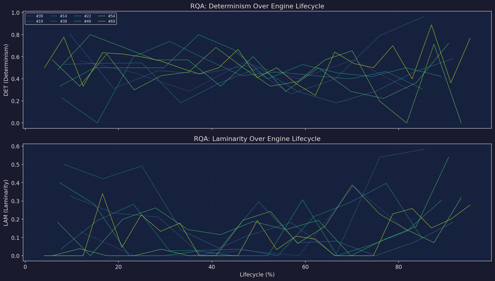
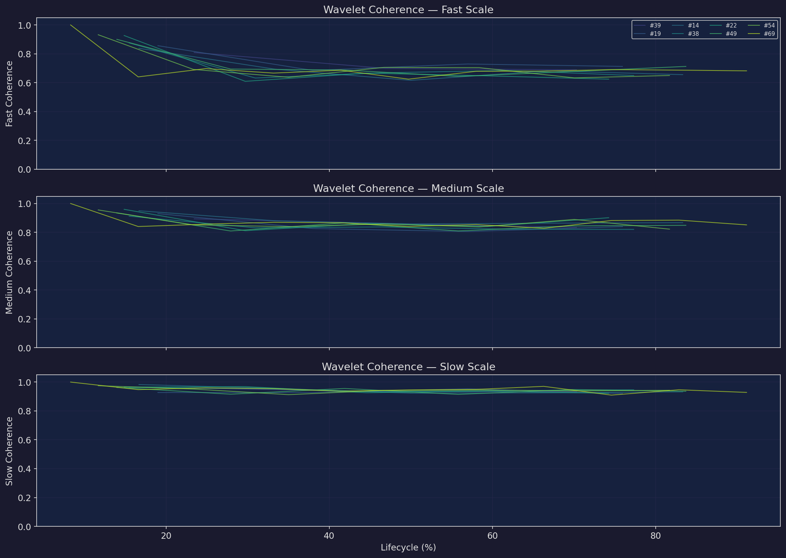
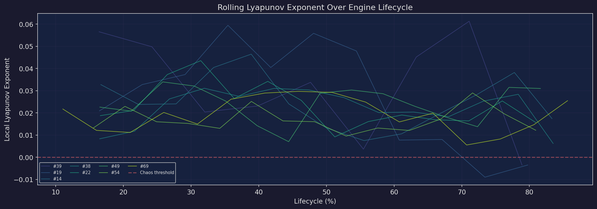
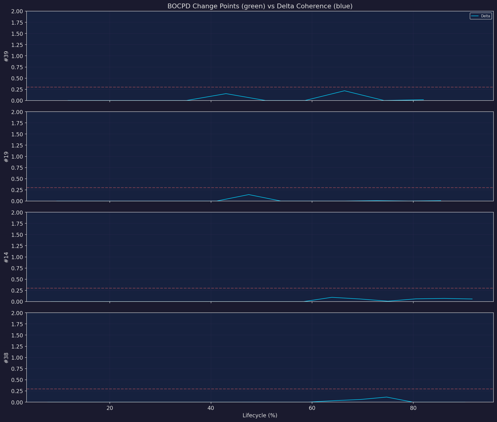
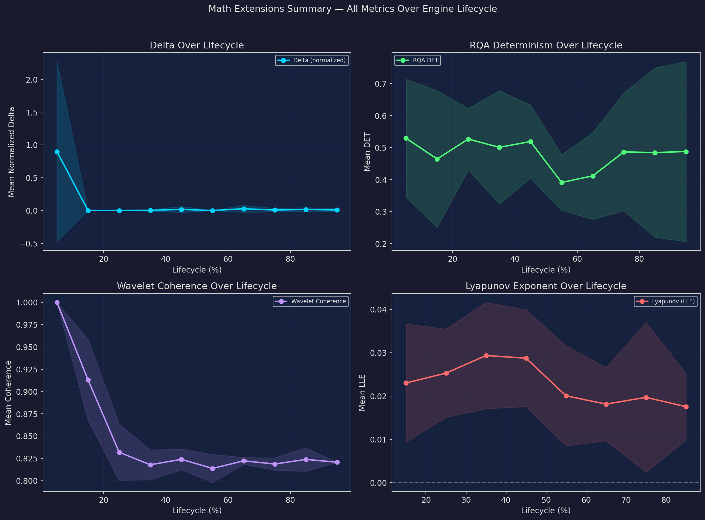

Implemented Modules
Tier 1 — Core Validation
Nonlinear Dynamics Validation of Pattern Retention

Scale-Resolved Coherence Spectrum

Rolling Local Lyapunov Exponent

| Engine | Regime |
|---|---|
| #39 | chaotic |
| #19 | edge |
| #14 | edge |
| #38 | edge |
| #22 | edge |
| #49 | edge |
| #54 | edge |
| #69 | edge |
Benchmark Competitor: Change Points vs Δ Alerts

| Engine | BOCPD Change Points |
|---|---|
| #39 | 0 |
| #19 | 0 |
| #14 | 0 |
| #38 | 0 |
| #22 | 0 |
| #49 | 0 |
| #54 | 0 |
| #69 | 0 |
Combined Summary
All Metrics Over Engine Lifecycle

Tier 2 — Advanced Extensions
Entropy
Space
Tier 2 modules are implemented and available for validation: Transfer Entropy (directed causality between systems), Phase Space Reconstruction (Takens' embedding, attractor geometry), and Random Matrix Theory (Marchenko-Pastur eigenvalue analysis, inspired by Charles Martin's WeightWatcher).
Module Reference
All modules at src/delta72/ — pure numpy implementations, no external dependencies.
Runtime: 1.7s for full validation suite.
Related
Δ.72 Canonical Framework — Full equation reference, dimensional analysis, regime boundaries, extended operators.
Coherence Engine — Live coherence scoring platform.